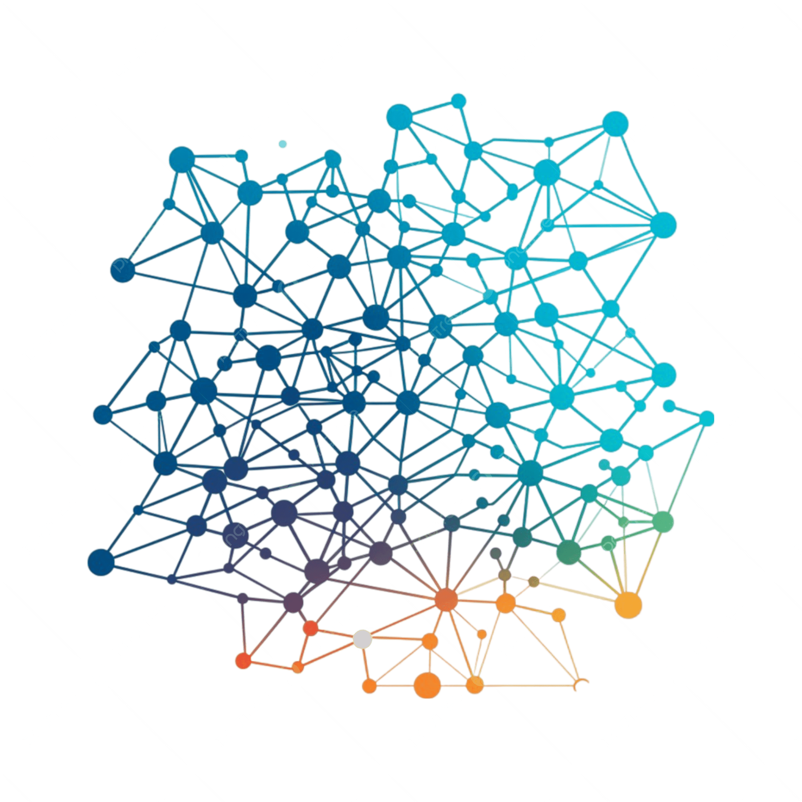
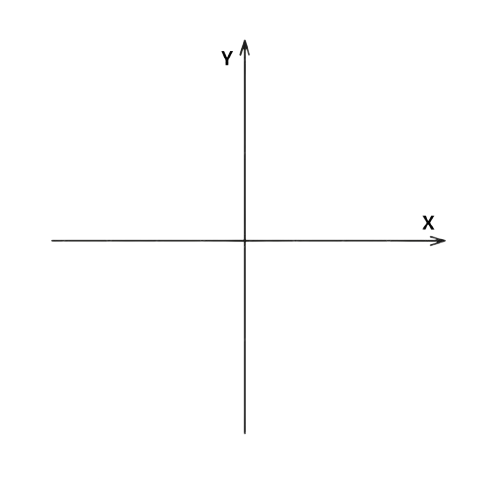
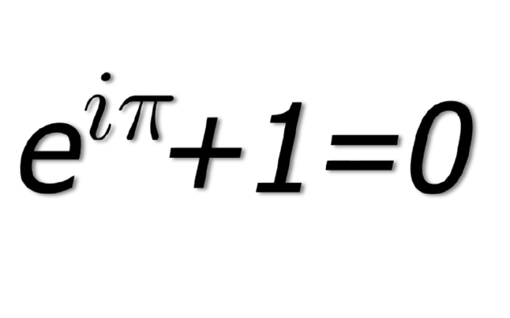

Born: c. 780 CE, Khwarazm
(present-day
Uzbekistan)
Died: c. 850 CE, Baghdad, Abbasid
Caliphate
(present-day
Iraq)
Achievement:
Founded Algebra and inspired the modern
concept of Algorithms.
When I consider what people generally want in calculating, I found that it is always a number.
MATHEMATICS • ASTRONOMY • GEOGRAPHY
Born: 1136 CE, Jazirat Ibn
Umar
(present-day
Cizre, Turkey)
Died: 1206 CE, Diyarbakir (Artuqid Sultanate)
Achievement:
Known as the "Father of Robotics";
designed programmable automata and water-powered machines.
ENGINEERING • AUTOMATA • HYDRAULICS

Born: 31 March 1596, La Haye en Touraine,
France
(present-day Descartes, France)
Died: 11 February 1650, Stockholm, Sweden
Achievement:
Created the Cartesian coordinate system, linking algebra and geometry.
Cogito, ergo sum.
I think, therefore I am.
MATHEMATICIAN • PHILOSOPHER
∫
Born: 4 January 1643, Woolsthorpe,
Lincolnshire, England
Died: 31 March 1727, London, England
Achievement:
Developed calculus and transformed
mathematics and physics.
If I have seen further, it is by standing on the shoulders of giants.
CALCULUS • MATHEMATICS • PHYSICS

Born: 15 April 1707, Basel,
Switzerland
Died: 18 September 1783,
Saint
Petersburg,
Russian Empire
Achievement:
Introduced modern mathematical
notation and made fundamental
contributions across mathematics.
Nothing takes place in the world whose meaning is not that of some maximum or minimum.
ANALYSIS • NUMBER THEORY • TOPOLOGY
Born: 26 December 1791,
London, England
Died: 18 October 1871,
London, England
Achievement:
Designed the first
general-purpose mechanical
computer (Analytical Engine).
Errors using inadequate data are much less than those using no data at all.
COMPUTER SCIENCE • MATHEMATICS
FIRST PROGRAM
Born: 10 December 1815,
London, England
Died: 27 Novamber 1852,
London, England
Achievement:
Wrote the first published algorithm
intended for a computer.
That brain of mine is something more than merely mortal; as time will show.
PROGRAMMER • MATHEMATICIAN
Born: 10 July 1856,
Simljan,
Austrian Empire
(present-day Croatia)
Died: 7 January 1943,
USA, New York City
Achievement:
Pioneered the modern AC electrical power system.
The present is thiers; the future, for which I really worked, is mine.
ELECTRICAL ENGINEERING • AC POWER
0101010011
Born: 23 June 1912,
London, England
Died: 7 June 1954,
Wilmslow, England
Achievement:
Know as the "Father of Artificial Intelligence" laid the foundations of
modern computer science .
The present is thiers; the future, for which I really worked, is mine.
COMPUTER SCIENCE • AI • CRYPTOGRAPHY
Born: 9 Novamber 1914,
Vienna, Austria-Hungary
Died: 19 January
2000,
Casselberry,
Florida, USA
Achievement:
-Co-invented frequency hopping
technology, which helped pave the way for Wi-Fi, Bluetooth and GPS.
Any girl can be glamorous
All you have to do is stand still and look stupid.
INVENTOR • ACTRESS
C++
Born: 30 December 1950,
Arhus, Denmark
Achievement:
Designed and developed the C++ programming language.
There are only two kinds of languages: the ones people complain about and the ones nobody uses.
COMPUTER SCIENCE • C++
Born: 28 December 1969,
Helsinki, Finland
Achievement:
Created Linux and Git,
transforming modern software development.
Talk is cheap. Show me the code.
SOFTWARE ENGINEERING • OPEN SOURCE